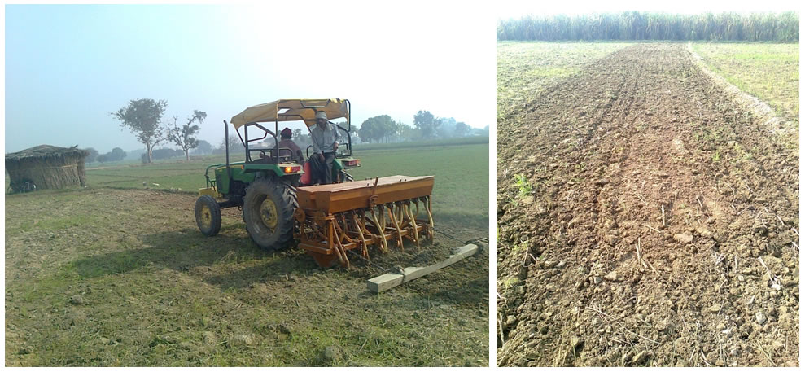
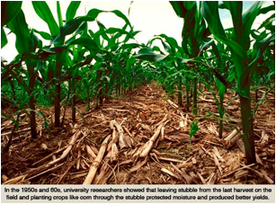
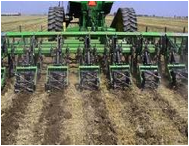
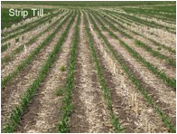

FMP 211 :: Lecture 05 :: TILLAGE - OBJECTIVES AND TYPES. FURROW TERMINOLOGY AND METHODS OF PLOUGHING. FIELD CAPACITY AND FIELD EFFICIENCY

TILLAGE
Mechanical manipulation of soil to provide favourable condition for proper crop growth is called tillage. Soil tillage consists of breaking the compact surface of earth to a certain depth and to loosen the soil mass so as to enable the roots of the crops to penetrate and spread into the soil.
Objectives of Tillage
- To prepare a desirable soil structure for a deep seed bed or a root bed suitable for different types of crops.( A granular structure is desirable to allow rapid infiltration and good retention of rainfall, to provide adequate air capacity and exchange with in the soil and to minimize resistance to root penetration. A good seed bed generally considered to imply finer particles and greater firmness in the vicinity of the seed)
- To control weeds or to remove unwanted crop plants (thinning)
- To manage plant residues. ( Mixing of trash is desirable from the tilth and decomposition stand points and retention of trash in the top layers reduce erosion)
- To minimize soil erosion. (By following counter tillage, listing and proper placement of trash).
- To establish specific surface configurations for planting, irrigating, drainage, harvesting operations etc.
- To incorporate and mix fertilizers, pesticides, soil amendments etc. in to the soil
Classification of Tillage
Tillage operations for seed bed preparations are classified as: i) Primary tillage ii) Secondary tillage.
1. Primary tillage
The initial major soil working operation designed to plough the soil deeply to reduce soil strength, cover plant materials and rearrange aggregates is called primary tillage. The objectives of primary tillage are
a. To reduce soil strength
b. To rearrange aggregates
c. To cover plant materials and burry weeds
d. To kill insects and pests
The implements used for primary tillage are called as primary tillage implements. They include many animal drawn and tractor drawn implements. Animal drawn implements mostly include indigenous ploughs and mould-board ploughs. Tractor drawn implements include mould-board ploughs, disc ploughs, heavy duty disk harrows, subsoil ploughs, chisel ploughs and other similar implements.
2. Secondary tillage
Lighter and finer tillage operations performed in the soil after primary tillage to create proper soil tilth and. surface configuration for seeding and planting are called secondary tillage operations. Secondary tillage operations are generally done on the surface soil. They do not cause much soil inversion and shifting of soil from one place to other. They consume less power per unit area compared to primary tillage operations. The main objectives of secondary tillage are
- To break the big clods and make the soil surface uniform and leveled as needed for a seed bed
- To destroy grasses and weeds in the field.
- To cut crop residues and mix them with top soil
The implements used for secondary tillage operations are called secondary tillage implements. They include different types of harrow, cultivators, sweeps, clod crushers, levellers, bund formers, ridge ploughs etc.
TILLAGE SYSTEMS
Tillage system consists of sequences of operations that manipulate the soil in order to produce a crop. The operations include tilling, planting, fertilization, pesticide application, harvesting, and residue chopping or shredding. The ways in which these operations are implemented affect the physical and chemical properties of the soil, which in turn affect plant growth.
There are two types of tillage systems namely a) conservation tillage system including no-till, ridge till and mulch till systems and b) other than conservation tillage systems namely a) reduced tillage system and b) conventional tillage system
Conservation tillage (30 percent or more crop residue left after planting)
Any tillage and planting system that covers 30 percent or more of the soil surface with crop residue, after planting, to reduce soil erosion by water or any system that maintains at least 1,120 kilogram per hectare of flat, small grain residue equivalent on the surface throughout the critical wind erosion period is called conservation tillage system Conversion tillage systems are further classified as a) no-till, b) ridge-till, and c) mulch-till. systems
1. No- till: No-till is defined as a system in which the soil is left undisturbed from harvest to planting except for nutrient injection. Planting or drilling is accomplished in a narrow seedbed or slot created by coulters, row cleaners, disk openers, in-row chisels, or roto-tillers. Weed control is accomplished primarily with herbicides. Cultivation may be used for emergency weed control.
2. Ridge-till: In ridge-till, the soil is also left undisturbed from harvest to planting except for nutrient injection. Planting is completed in a seedbed prepared on ridges with sweeps, disk openers, coulters, or row cleaners. Residue is left on the surface between ridges. Weed control is accomplished with herbicides and/or cultivation. Ridges are rebuilt during cultivation.
3. Mulch-till: The soil is disturbed before planting. Tillage tools such as chisels, field cultivators, disks, sweeps or blades are used. Weed control is accomplished with herbicides and/or cultivation. Mulch-till is a category that includes all conservation tillage practices other than no-till and ridge-till. Two tillage practices that fall into this category are zone-till and strip-till. Both of these tillage practices involve tilling a strip into which seed and fertilizer are placed
Other tillage systems (less than 30 percent crop residue left after planting)
Tillage systems that leave less than 30 percent crop residue after planting are not classified as conservation tillage. However, these systems may meet erosion control goals with or without other supporting conservation practices, such as strip cropping, contouring, terracing, etc.
1) Reduced-till: Reduced-till systems leave 15-30 percent residue cover after planting or 560 to 1,120 kilograms per hectare of small grain residue equivalent throughout the critical wind erosion period.
2) Conventional-till: Conventional-till systems leave less than 15 percent residue cover after planting, or less than 560 kilograms per hectare of small grain residue equivalent throughout the critical wind erosion period. These systems generally involve plowing or some other form of intensive tillage.
ANOTHER CLASSIFICATION OF TILLAGE SYSTEMS
There are two types of tillage namely a. Conventional tillage or clean tillage and b. Conservation tillage
1. Conventional tillage or clean tillage: Ploughing the entire field several times to prepare a seed bed is called conventional tillage
2. Conservation tillage: Ploughing the field with lesser number of passes over the entire land or ploughing only in the required space of the land and then sowing is called conservation tillage. . Different types of conservation tillage are as fallows
a. Minimum Tillage -Minimum soil manipulation necessary to meet tillage requirements
|  |
Minimum Tillage for Wheat |
c. Mulch Tillage – Tillage operations in which nearly 30 % of crop residue or other mulching materials are left on or near the soil surface is called mulch tillage.
 |
|
Farm Waste Shredder (Video) |
Farm Waste Mulching |
d. Rotary Tillage for crop production is called minimum tillage.
b. Strip Tillage - In strip tillage system only isolated bands of soil are tilled.- Tillage operations employing rotary action of the tool to cut, break and mix the soil is called rotary tillage..
|  |  | |
| Strip tillage in wheat | Strip tillage in corn | Strip till in wheat |
e. Combined Tillage – Tillage operations utilizing simultaneously two or more different types of tillage tools or implements to simplify, control or reduce the number of operations over a field is called combined tillage.
PLOUGHING OF LAND
Ploughing of land separates the top layer of soil into furrow slices. The furrows are turned sideways and inverted to a varying degree, depending upon the type of plough being used. It is a primary tillage operation, which is performed to shatter soil uniformly with partial or complete soil inversion.
Furrow terminologies
Fig.1. Plough furrow
(i) Furrow: It is a trench formed by an implement in the soil during the field operation (Fig.1a).
(ii) Furrow slice: The mass of soil cut, lifted and thrown to one side is called furrow slice.
(iii) Furrow wall: It is an undisturbed soil surface by the side of a furrow.
(iv) Crown: The top portion of the turned furrow slice is called crown.
(v) Back furrow: A raised ridge left at the centre of the strip of land when ploughing is started from centre to side is called back furrow. When the ploughing is started in the middle of a field, furrow is collected across the field and while returning trip another furrow slice is lapped over the first furrow. This is the raised ridge which is named as back furrow (Fig.1b).
(vi) Dead furrow: An open trench left in between two adjacent strips of land after finishing ploughing is called dead furrow (Fig.1c).
(vii) Head land: While ploughing a land with a tractor a strip of unploughed land is left at each end of the field for the tractor to turn, which is called head land. At the end of each trip, the plough is lifted until the tractor and the plough have turned and are in position to start the return trip. The head land is about 6 meters wide for two or three bottom tractor plough and one meter more for each additional bottom.
METHODS OF PLOUGHING A LAND
There are two main methods of ploughing a field which are known as “inlands” and “round about” ploughing
A normal right hand plough must always have an open furrow on the right in which to lay the next furrow slice. It is therefore, necessary to travel across the field in one place and come back in another. There are two ways of doing this by “gathering” and “casting’
Gathering
Whenever a plough works round a strip of ploughed land, it is said to be gathering. The tractor and plough turns to right each time the head land is reached. When the land is ploughed, a raised ridge (double width ridge) is formed in the center of the field. This however would be uneconomical way of working as time is wasted at the start in making awkward turns, while later, total idle running would be increased along the head land
Casting
Whenever a plough works round a strip of un ploughed land, it is said to be casting. The tractor and plough turns to the left each time the head land is reached. When the land is ploughed in this way a wide furrow (double width furrow) will be left in the center and is termed as ‘finish’ or open furrow or dead furrow
a) Continuous ploughing method
In normal conditions, the continuous ploughing method is considered very convenient and economical. This is a method usually used in which the tractor and plough never run idle for more than three quarter land width along the headland and never turn in a space narrower than a quarter land width. In this method, first the headland is marked and the first ridge is set up at three quarter of a land width from the side (Fig. a). The other ridges are set at full width over the field. The operator starts ploughing between the first ridge and the side land. The operator continues to turn left and cast in the three quarter land until ploughing is completed in a quarter land width on each side (Fig. b). At this stage, the plough is lifted to half depth for the last trip down the side land of the field. This leaves a shallow furrow where the finish comes.
Continuous ploughing method
After this stage, the driver turns right and gathers round the one fourth land already ploughed . Gathering is continued till the un ploughed strip in first three-quarter land is ploughed and completed. This gathering reduces the first full land by a quarter (Fig. c). The remaining three quarter land can be treated in exactly the same manner as the original three quarter land completed earlier. This process is repeated for all other lands in the field.
b) Round and round ploughing
In this method, the plough moves round and round in a field. This system is adopted under conditions where ridges and furrows interfere with cultivation work. The field can be started in two ways.
a) Starting at the centre
A small plot of land is marked in the middle of the field and it is ploughed first. After that, the plough works round this small plot and the entire plot is completed. This is not a very economical method.
b) Starting at the outer end
Tractor starts ploughing at one end of the field and then moves on all the sides of the field and comes gradually from the sides to the centre of the field. Wide diagonals are left unploughed to avoid turning with the plough. There are no back furrows in this method. Conventional ploughing is usually done by this method.
c) One way ploughing
This system requires the use of a special type of plough known as reversible plough or one way plough. Such a plough turns furrows to the left or right. After the head land has been marked, the operator plough along a straight side land mark. At the end of the first trip, he turns his tractor in a loop and returns down the same furrow. No dead and back furrows are left in the field. In gently sloping fields, this method is suitable.
FIELD PERFORMANCE OF MACHINES
The rate at which a machine can cover a field while performing its intended function is one of the considerations in determining the cost of operation of the machine
Theoretical field capacity
It is the rate of field coverage that would be obtained if the machine were performing its function 100 % of the time at the rated forward speed and always covering 100 % of its rated width,
Theoretical field capacity FCT = ha / h
Another equation
Theoretical field capacity FCT =
Where
FCT = effective field capacity, hectare per hr.
S = speed of travel in km per hour.
W = theoretical width of cut of the machine in metre, and
Theoretical time per hectare
It is the time that would be required at the theoretical field capacity
Effective operating time
It is the time during which the machine is actually performing its intended function. The effective operating time per hectare is greater than the theoretical time per hectare if less than full rated width is utilized
Effective field capacity
It is the actual coverage of the machine based on the total field time. Effective field capacity is usually expressed as hectares per hour
Field efficiency
It is the ratio of effective field capacity to theoretical field capacity expressed as percent.
Field efficiency =
Effective field capacity is calculated as follows
FCA =  ha/h
ha/h
Where
FCA = effective field capacity, hectare per hr.
S = speed of travel in km per hour.
W = theoretical width of cut of the machine in metre, and
E = field efficiency in per cent.
Soil inversion =
Soil pulverization
It is the quality of work performed by a plough expressed in terms of particle size distribution. It is determined by sieve analysis.
PROBLEMS ON FIELD CAPACITY AND FIELD EFFICIENCY OF TILLAGE IMPLEMENTS
Theoretical field capacity
It is the rate of field coverage of the implement, based on 100 per cent of time at the rated speed and covering 100 per cent of its rated width.
Theoretical field capacity in hectares / hr =
Effective field capacity
It is the actual area covered by the implement based on its total time consumed and its width.
Field efficiency
It is the ratio of effective field capacity and theoretical field capacity expressed in percent.
Field efficiency =
Effective field capacity is calculated as follows
C =
Where
C = effective field capacity, hectare per hr.
S = speed of travel in km per hour.
W = theoretical width of cut of the machine in metre, and
E = field efficiency in per cent.
Problem.1. A 5 x 20 cm double action disc harrow is operated by a tractor having a speed of 5 km/h. Calculate the actual field capacity , assuming the field efficiency of 80 percent.
Solution:
Size of the harrow (width) = 5 x 20 = 100 cm
Area of coverage =
= (1 x 5 x 80) / 1000
= 0.4 ha/h
Problem 2. A 3 x 30 cm plough is moving at a speed of 4 km/h. calculate how much time it take to plough 500 x 500 m field when the field efficiency is 70 %.
Solution :
Width of the plough = 3 x 30 = 90 cm = 0.9 m
Effective field capacity = (0.9 x 4 x 70)/ 1000
= 0.25 ha/h = 2500 m2/h
Time required = 500 x 500/ 2500
= 100 h
Problem.3. A 4 bottom 40 cm mould board plough is operating at 5.5 km/h speed with 75 % field efficiency . Calculate what is the rate of doing work in hectares per hour.
Solution :
Width of the plough = 4 x 40 = 160 cm = 1.6 m
Area covered = 1.6 x 5.5 x 75/1000
= 0.66 ha/h
Problem. 4. An indigenous plough has a 20 cm wide furrow at the top and 10 cm depth.
Calculate the volume of soil handled per day 8 hours if the speed of working is 2.5 km/h.
Solution:
Furrow cross section = 10 x20/2
= 100 cm2
Distance traveled in 8 hours = 8 x 2.5 x 1000 = 20,000 m
Volume of soil handled = 20000 x 100/ 10000
= 200 m3
Model questions
- A three bottom 40 cm M.B plough is working at a speed of 4 km/h . Calculate the effective field capacity if the field efficiency is 80 percent.
- A four bottom 30 cm M.B plough is working at a speed of 4.5 km/h. Calculate the actual field capacity if the field efficiency is 70 percent.
MODEL QUESTIONS
- List the animal drawn primary tillage implements .
iii. Define Theoretical field capacity.
iv. Define Effective field capacity.
v. Define field efficiency
vi. List the objectives of Tillage
- Differentiate casting and gathering.
- With neat diagram mention the furrow terminologies
- What do you mean by soil pulverization?
- Define conservation tillage
- Define mulch tillage
1. Preparation of soil in such a way that crop residues and other mulching materials are left on the surface is called
a. minimum tillage b. strip tillage c. rotary tillage d. mulch tillage
2. The open trench left in between two adjacent strips of land after finishing the ploughing is called
a. dead furrow b. back furrow c. head land d. crown
3. Theoretical field capacity of a double action disc harrow is 1.0 ha/h. Field
efficiency is 80 %. What is the actual field capacity?
a. 1.0 ha/h b. 1.5 ha/h c. 0.5 ha/h d. 0.8 ha/h
4. Soil tillage consists of breaking compact surface of soil to certain depth and loosening the soil True / False
5. Whenever a plough works round a strip of un ploughed land it is called casting True / False
6. When a plough works round a strip of ploughed land it is called as Casting True / False
| Download this lecture as PDF here |